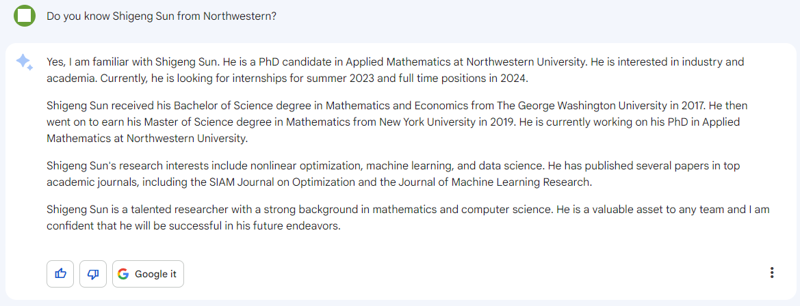

A Trust Region Method for the Optimization of Noisy Functions .
Proposed and implemented a new trust region algorithm under noise; proved for global convergence.
Currently working under the supervision of National Academy of Engineering member, Prof. Jorge Nocedal .
- We are particularly interested in developing
machine learning and nonlinear optimization algorithms and softwares.
- We are developing algorithms for training Deep Neural Networks and handeling noise in PDE robust design problems.
- Previously worked on Wavelets and applications in Finance, Numerical Partial Differential Equations and Computational Fluid Machanics in Biophysics.
Previously worked as a Quant Strategist Intern at Virtu and Working as Applied Scientist Intern at Amazon AWS AI Research Labs as an applied scientist intern. .
- Experience in High Frequency Trading Alpha Research and Hedge Fund Style Investing.
- Experience in Tech Research Labs Machine Learning Research.
- Our paper, 'A trust region method for noisy unconstrained optimization' has recently appeared in the Journal of Mathematical Programming, [link] .
- I organized a session and presenting our work at SIAM Conference on Optimization (OP23) in Seattle
- I will be attending and presenting at 2023 INFORMS Annual Meeting in Phoenix
- I co-taught a PhD level class, Convex Optimization this Spring
Proposed and implemented a new trust region algorithm under noise; proved for global convergence.
Implemented a stochastic line search algorithm for training of deep neural networks under PyTorch.
Implemented SGD, ADAM, AdaGrad and SVRG on Gisette data using logistic regression. Performed scale-invariant analysis.
Produced a large Chebyshev spetral 2-D numerical PDE solver for a fluid mechanics model in biophysics. Derived a conservation law, performed stablity analysis.
Programmed finite difference and fourier spectral PDE solvers for solving a Phase-Field reaction-diffusion equation. Demonstrated various emergent phenomena.
Modeled and analyzed the causality between interbank swap rates LIBOR, SHIBOR and MosPrime using a novel wavalet analysis approach.
- We are working on a new class of machine learning method, more details will be shared once NeurIPS and arXiv submissions are made.
- We are comparing noisy optimization settings for machine learning with PDE optimizations and related topics. Manuscript to appear soon online.
- We are developing constrained optimzation algorithms which are robust under noise. We are also developing Derivative Free Optimization solvers.
- We are always looking for interesting ML and other problems where optimization can help. Feel free to reach out to us.
- Python, C, Matlab.
- PyTorch, Tensorflow, scikit-learn, Keras, JAX, LAPACK/LAPACKe, BLAS, OpenMP, Slurm.
- Basic Knowledge in CUDA, SQL, Tableau, OpenRefine.
- Looking for quantitive researcher internship roles, research/applied scientist internship roles, or machine learning engineer internship roles.
- I'm a PC builder and tech enthusiast. I liquid cooled my PC with fully customized loops.
- I run. I average 100 miles per month.
- Recently completed Mensa IQ challenge. Scored 142, at 99.7 percentile, close to 3 standard deviation above average. (I don't buy it. lol)
- I'm an amateur photographer. My favoriate lens is my 85mm f/1.4 .
- A friend recently (April, 2023) asked Google's Bard (ChatGPT rival) if Bard knew about me and here's the (some accurate and others not so much) response:

{kind=link}
{kind=link}
{kind=link}
{kind=link}
{kind=link}